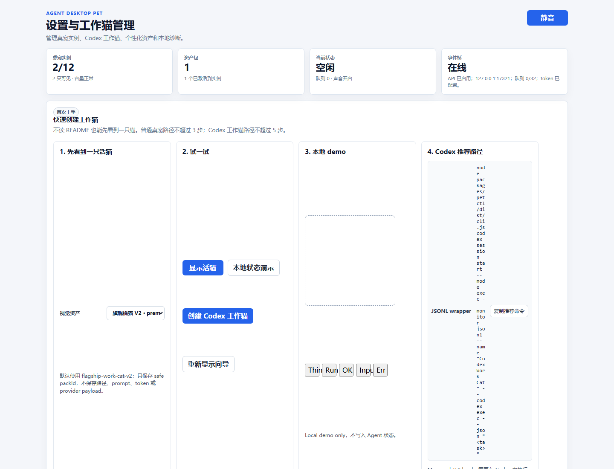
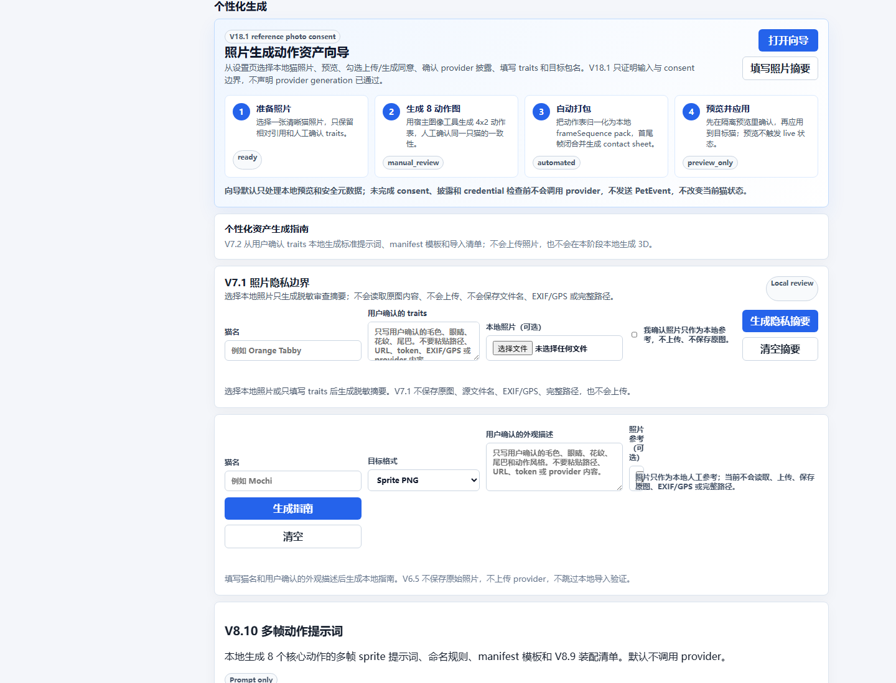
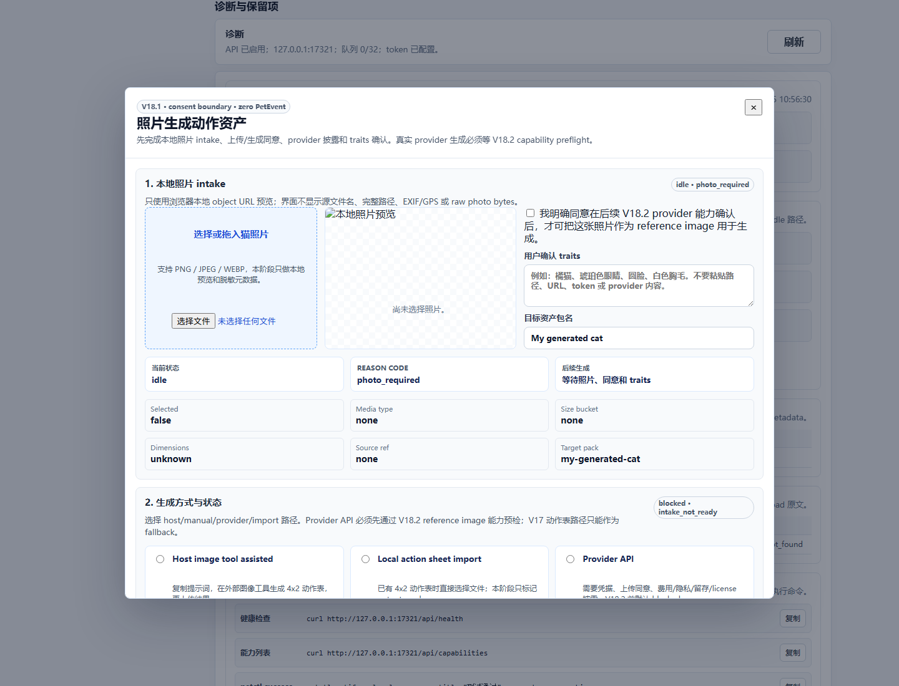
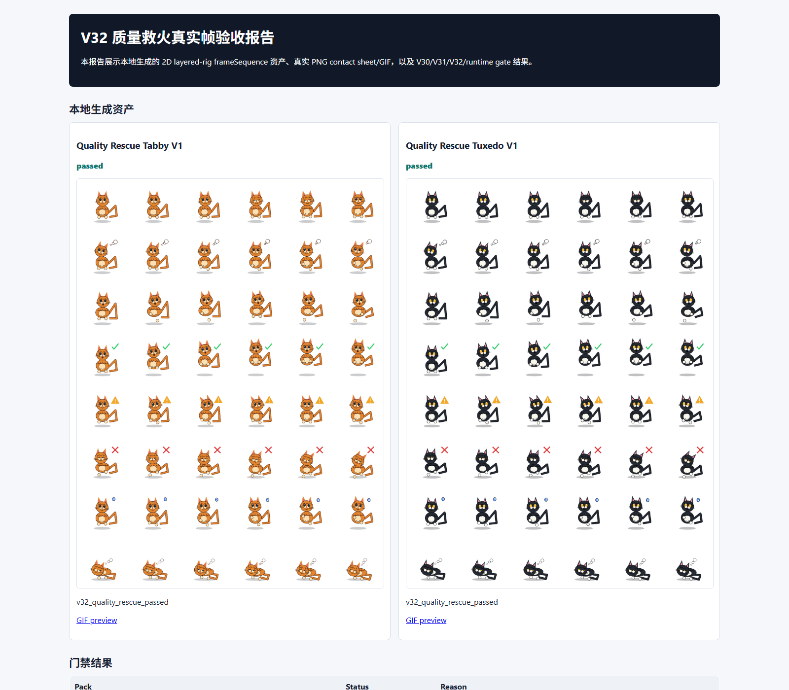

目标架构
V32 目标是从 V30 语义门禁和 V31 高质量目标出发，用本地分层 rig / frameSequence 资产、真实帧测量、预览、target-only apply、rollback 和截图证据闭环。
日期：2026-06-25。本报告以 V32 active scoped PRD 为主基准，追溯 V31 高质量目标体验和 V30 语义动作门禁。所有截图均由 Chrome headless 生成，未打开可见窗口，未抢占焦点。
V32 目标是从 V30 语义门禁和 V31 高质量目标出发，用本地分层 rig / frameSequence 资产、真实帧测量、预览、target-only apply、rollback 和截图证据闭环。
当前实现包含 V32 measured quality gate、两个本地项目自有 8 动作 pack、V30/V31 gate 复用、V26 preview/apply/rollback 复用，以及设置页中的资产、照片向导和诊断入口。
V31 arbitrary-cat photo-to-action 仍 blocked/candidate-only；本报告不证明真实 provider、生产发布、原生窗口焦点或跨平台能力。
| 命令 | 状态 | 耗时 | 摘要 |
|---|---|---|---|
pnpm --filter desktop test | passed | 4368 ms | tests pass=277 fail=0 |
pnpm --filter desktop check | passed | 11723 ms | > desktop@0.1.0 check /mnt/c/workspace/codexpat/apps/desktop > tsc --noEmit |
pnpm --filter @agent-desktop-pet/petctl test | passed | 7302 ms | tests pass=71 fail=0 |
pnpm --filter desktop exec node --import tsx ../../scripts/v30_semantic_animation_gate_smoke.mjs | passed | 1357 ms | ok=true; status=passed |
pnpm --filter desktop exec node --import tsx ../../scripts/v31_continuation_smoke.mjs | passed | 2697 ms | ok=true; status=blocked |
pnpm --filter desktop exec node --import tsx ../../scripts/v32_quality_rescue_smoke.mjs | passed | 35600 ms | ok=true; status=passed scoped |
| 检查项 | 状态 | 文件 |
|---|---|---|
| V32 active scoped PRD | passed | docs/active/agent_desktop_pet_prd_v32.md |
| V31 high-quality target experience | passed | docs/active/agent_desktop_pet_prd_v31.md |
| V30 semantic gate boundary | passed | docs/active/agent_desktop_pet_prd_v30.md |
| V32 target architecture | passed | docs/V32.x/v32-target-architecture.md |
| V32 real evidence | passed | docs/V32.x/evidence/v32_quality_rescue-smoke-2026-06-24.md |
| 功能点 | 状态 | 证据 | 说明 |
|---|---|---|---|
| V32 local 8-action packs | passed scoped | v32_quality_rescue_smoke.mjs + v32-quality-rescue.test.ts | 真实 PNG/GIF/contact sheet evidence exists for two named packs. |
| V31 arbitrary-cat photo-to-action | blocked scoped | v31_continuation_smoke.mjs | V31.11/V31.12 remain blocked because no photo-derived action frames passed full closure. |
| V30 transform-only rejection | passed scoped | v30_semantic_animation_gate_smoke.mjs | Weak transform-only candidate is rejected; semantic candidate passes. |
| Browser settings UX | passed scoped | Chrome headless screenshot flow | Settings/gallery/photo wizard/diagnostics paths render with mocked Tauri data. |
| Native desktop overlay focus/window behavior | not tested in this report | Prior Post-V30 runtime evidence only | This report intentionally avoids visible window/focus-stealing automation. |

docs/V32.x/evidence/v32-full-prd-audit-e2e-2026-06-25/screenshots/01-settings-overview-desktop.png

docs/V32.x/evidence/v32-full-prd-audit-e2e-2026-06-25/screenshots/02-assets-gallery-preview.png

docs/V32.x/evidence/v32-full-prd-audit-e2e-2026-06-25/screenshots/03-photo-2d-wizard-entry.png

docs/V32.x/evidence/v32-full-prd-audit-e2e-2026-06-25/screenshots/04-photo-2d-wizard-modal.png

docs/V32.x/evidence/v32-full-prd-audit-e2e-2026-06-25/screenshots/05-diagnostics-and-boundaries.png

docs/V32.x/evidence/v32-full-prd-audit-e2e-2026-06-25/screenshots/06-mobile-settings-overview.png

docs/V32.x/evidence/v32-full-prd-audit-e2e-2026-06-25/screenshots/07-v32-quality-report.png
| 优先级 | 区域 | 发现 | 证据 |
|---|---|---|---|
| Medium | Photo automation | V31/V32 evidence still does not implement arbitrary-cat photo-to-action closure. | V31 continuation smoke reports v31_11/v31_12 blocked; V32 PRD explicitly scopes to named local project-authored packs. |
| Medium | Browser UX evidence | Headless settings-page screenshots use mocked Tauri data and cannot prove native overlay or real bridge behavior. | The copied post_v30 browser UX evidence uses a mocked Tauri invoke layer and does not open visible desktop windows. |
| Low | Documentation age | Several V32 generated evidence files are dated 2026-06-24 while this audit report is dated 2026-06-25. | V32 smoke script currently emits its original execution date; this audit records the rerun command result separately. |
| Claim scan | passed | [] |
|---|---|---|
| Security scan | passed | [] |
{
"title": "设置与工作猫管理",
"overviewCards": 4,
"navLinks": 6,
"instanceCards": 2,
"galleryCards": 15,
"assetPreviewVisible": true,
"photoWizardVisible": true,
"diagnosticsVisible": true,
"forbiddenReadyClaimsVisible": true,
"forbiddenReadyClaimContext": true,
"bodyTextSample": "AGENT DESKTOP PET\n设置与工作猫管理\n\n管理桌宠实例、Codex 工作猫、个性化资产和本地诊断。\n\n静音\n桌宠实例\n2/12\n2 只可见 · 容量正常\n资产包\n1\n1 个已激活到实例\n当前状态\n空闲\n队列 0 · 声音开启\n事件桥\n在线\nAPI 已启用；127.0.0.1:17321；队列 0/32；token 已配置。\n首次上手\n快速创建工作猫\n\n不读 README 也能先看到一只猫。普通桌宠路径不超过 3 步；Codex 工作猫路径不超过 5 步。\n\n1. 先看到一只活猫\n视觉资产\n旗舰橘猫 V2 · premium flagship orange tabby\nLiving Work Cat · warm flagship tabby\n橘子工作猫 · orange tabby\n礼服工作猫 · tuxedo\n银灰工作猫 · silver\n三花工作猫 · calico\n奶油工作猫 · cream\n蓝灰工作猫 · blue gray\n黑曜工作猫 · black\n雪白工作猫 · white\n橘白工作猫 · ginger white\n狸花工作猫 · brown tabby\n丁",
"photoWizardModalOpenedDuringScenario": true,
"v32ReportScreenshotCopied": true
}